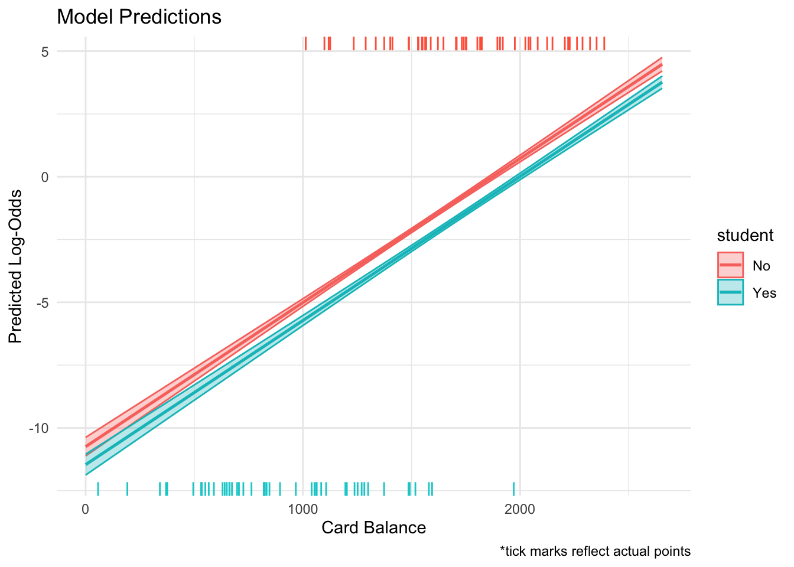
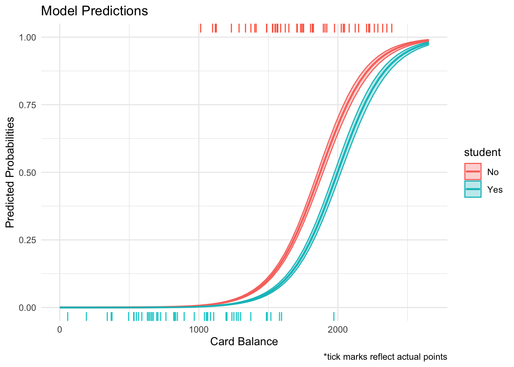
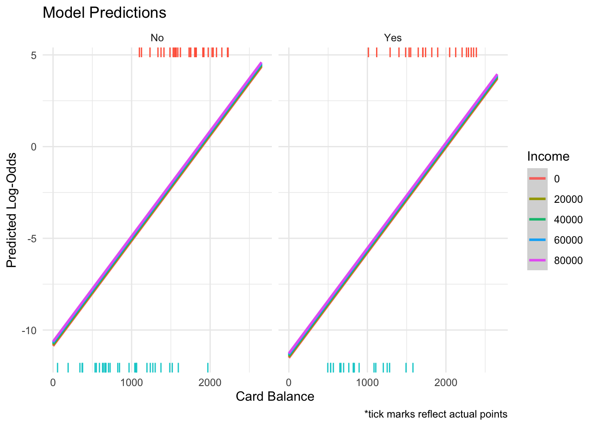

# A tibble: 2 × 2
default total
<chr> <int>
1 No 9667
2 Yes 333Introduction
The data set I am working with for this post consists of 10000 individuals and whether their credit card has defaulted or not. The variables I am interested in are card balance, income, and whether the credit card holder is a student. My goal is to model and visualize probability of defaulting by using logistic regression. An important quality of the data to note is that nearly 97% of the cases do not default. The data set is publicly available on Kaggle and can be found through the link below.
Link: Default Dataset
Class balance
Modeling Default
mod <- glm(default ~ balance + student, data = credit,
family = "binomial")
summary(mod)
Call:
glm(formula = default ~ balance + student, family = "binomial",
data = credit)
Coefficients:
Estimate Std. Error z value Pr(>|z|)
(Intercept) -1.075e+01 3.692e-01 -29.116 < 2e-16 ***
balance 5.738e-03 2.318e-04 24.750 < 2e-16 ***
studentYes -7.149e-01 1.475e-01 -4.846 1.26e-06 ***
---
Signif. codes: 0 '***' 0.001 '**' 0.01 '*' 0.05 '.' 0.1 ' ' 1
(Dispersion parameter for binomial family taken to be 1)
Null deviance: 2920.6 on 9999 degrees of freedom
Residual deviance: 1571.7 on 9997 degrees of freedom
AIC: 1577.7
Number of Fisher Scoring iterations: 8grid <- credit |>
data_grid(
balance = seq_range(balance, n = 60),
student = c("Yes", "No")
)
aug <- augment(mod, newdata = grid,
se_fit = TRUE)
aug <- aug|>
mutate(.lower = .fitted - .se.fit,
.upper = .fitted + .se.fit)
# obtaining sample to avoid overlap in following geom_rug()
default_yes <- credit|>
filter(default == 1)|>
sample_n(size = 50, replace = F)
default_no <- credit|>
filter(default == 0)|>
sample_n(size = 50, replace = F)Log Odds Visualization
ggplot(data = aug,
aes(x = balance, y = .fitted, group = student))+
geom_line(aes(color = student), size = 0.9)+
geom_ribbon(data = aug, aes(y = .fitted,
ymin = .lower,
ymax = .upper, color = student, fill = student),
alpha = 0.3)+
geom_rug(data = default_yes, sides = "t", aes(y = default), color = "tomato")+
geom_rug(data = default_no, sides = "b", aes(y = default), color = "darkturquoise")+
theme_minimal()+
labs(x = "Card Balance", y = "Predicted Log-Odds", title = "Model Predictions", caption = "*tick marks reflect actual points")Warning: Using `size` aesthetic for lines was deprecated in ggplot2 3.4.0.
ℹ Please use `linewidth` instead.
This plot displays the relationship between the predicted log odds of the model and account balance. As denoted by the key, there are two lines which exhibit the impact of our student variable. Evidently, non-students have increased log odds for defaulting in comparison to students. This is congruent with our negative model coefficient for studentYes, which reflects a lower probability of defaulting. The red marks on the bottom show cases where the card holder did not default, while the upper blue marks display cases that did default. It is also important to note that as card balance increases, the log odds of defaulting increase accordingly.
aug2 <- aug|>
mutate(.prob = (exp(.fitted)) / (1 + exp(.fitted)),
.lowerprob = (exp(.lower)) / (1 + exp(.lower)),
.upperprob = (exp(.upper)) / (1 + exp(.upper)))Probability Visualization
ggplot(data = aug2,
aes(x = balance, y = .prob, group = student))+
geom_line(aes(color = student), size = 0.9)+
geom_ribbon(data = aug2, aes(y = .prob,
ymin = .lowerprob,
ymax = .upperprob, color = student, fill = student),
alpha = 0.3)+
geom_rug(data = default_yes, sides = "t", aes(y = default), color = "tomato")+
geom_rug(data = default_no, sides = "b", aes(y = default), color = "darkturquoise")+
theme_minimal()+
labs(x = "Card Balance", y = "Predicted Probabilities", title = "Model Predictions", caption = "*tick marks reflect actual points")
This visualization is identical to the last, yet now the log odds on the y-axis have been converted to display the predicted probability of defaulting. We again see that as balance increases, the probability of defaulting increases, while students have a reduced chance of defaulting.
Conclusion and Wrap-Up
In conclusion, the class imbalance of the default target variable is a limitation to this analysis. This may lead to model bias, as the model is likely to favor non-defaulting accounts because, as said before, nearly 97% of cases did not in fact default. Additional interest with the analysis pertain to the oddities of the our student variable. My common sense would lead me to believe that students would be more likely to default but this was not the case, as shown by the model summary and the visualization. In the future, I would certainly further investigate the impacts of being a student on probability of defaulting, and overall financial well being. Lastly, I think that an expanded data set with more metrics would certainly add to the capabilities of analysis.
Connection to Class Ideas
I would argue that this visualization is effective because it displays all of the components of the logistic regression model which I built to predict defaults. The process of creating the model, using the grid feature to make predictions at different values of our predictors, and displaying the resulting model allows viewers to understand precisely how the model is gauging probability for cases. Additionally, the use of the ribbon helps to display model uncertainty in terms of standard error.
Adding income to the Model
mod2 <- glm(default ~ balance + income + student, data = credit,
family = "binomial")
grid2 <- credit |>
data_grid(
balance = seq_range(balance, n = 60),
income = seq_range(income, n = 4, pretty = T),
student = c("Yes", "No")
)
aug3 <- augment(mod2, newdata = grid2,
se_fit = TRUE)|>
mutate(.lower = .fitted - .se.fit,
.upper = .fitted + .se.fit)
ggplot(data = aug3,
aes(x = balance, y = .fitted, color = factor(income), fill = factor(income)))+
geom_smooth(se = T)+
geom_rug(data = default_yes, sides = "t", aes(y = default), color = "tomato")+
geom_rug(data = default_no, sides = "b", aes(y = default), color = "darkturquoise")+
facet_wrap(~student)+
theme_minimal()+
labs(x = "Card Balance", y = "Predicted Log-Odds", title = "Model Predictions", caption = "*tick marks reflect actual points", color = "Income")+
guides(fill = "none")`geom_smooth()` using method = 'loess' and formula = 'y ~ x'
In the plot above, we see that income has little to no effect in predicting probability of default. The lines at various values of income do not differ in intecept by very much, meaning it should likely not be included in the final model.
summary(mod2)
Call:
glm(formula = default ~ balance + income + student, family = "binomial",
data = credit)
Coefficients:
Estimate Std. Error z value Pr(>|z|)
(Intercept) -1.087e+01 4.923e-01 -22.080 < 2e-16 ***
balance 5.737e-03 2.319e-04 24.738 < 2e-16 ***
income 3.033e-06 8.203e-06 0.370 0.71152
studentYes -6.468e-01 2.363e-01 -2.738 0.00619 **
---
Signif. codes: 0 '***' 0.001 '**' 0.01 '*' 0.05 '.' 0.1 ' ' 1
(Dispersion parameter for binomial family taken to be 1)
Null deviance: 2920.6 on 9999 degrees of freedom
Residual deviance: 1571.5 on 9996 degrees of freedom
AIC: 1579.5
Number of Fisher Scoring iterations: 8Examining the summary of the model output, our findings from the plot above are reflects by the small t-value associated with income. Additionally, the AIC is lower in the first model, confirming that income is not useful in the model for predicting default probability.